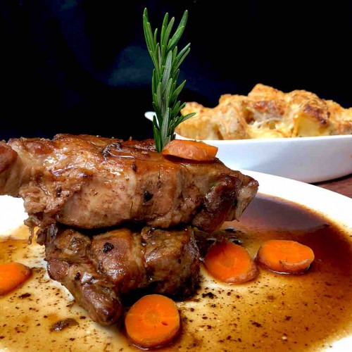

Volver al index
TP - Receta de Cocina
Bondiola a la cerveza

Ingredientes
- 1,5 kg de Bondiola de Cerdo Fresca.
- 1 cebolla cortada en trozos pequeños.
- 1 zanahoria grande cortada en monedas.
- 1 cabeza de ajo cortada al medio.
- 500 cc de cerveza negra.
- 60 g de manteca pomada.
- 2 cucharadas de mostaza.
- 1 cucharada de miel.
- 1 cucharada de azúcar negra.
- 2 batatas.
- Sal.
- Pimienta.
Pasos
- Cortar la bondiola en bifes de 2 dedos de espesor, salpimentar y dorar por ambos lados en un sarten grande con un toque de aceite y manteca. Retirar y reservar.
- En el mismo recipiente rehogar la cebolla, la zanahoria y agregar el ajo.
- Volver la carne y sumar la cerveza, cocinar por 30 minutos a fuego medio bajo.
- Por otra parte en un recipiente, mezclar dos cucharadas de manteca pomada, la mostaza, la miel y el azúcar hasta integrar todo y también agregar a la preparación.
Una vez que se disuelva la mezcla en la cocción dejar reducir, tomara consistencia, brillo, sabor y estará listo para servir acompañado de un puré de batatas.
- Para el puré de batatas, hervir las batatas con cáscara por 40 minutos, pelar, salpimentar y pisar bien. Y está listo!🍻.